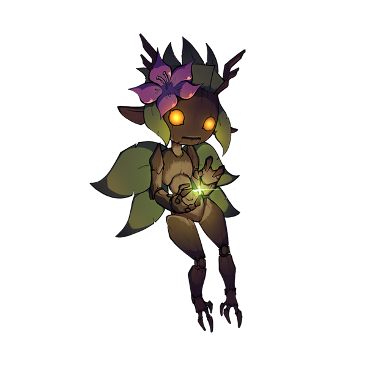
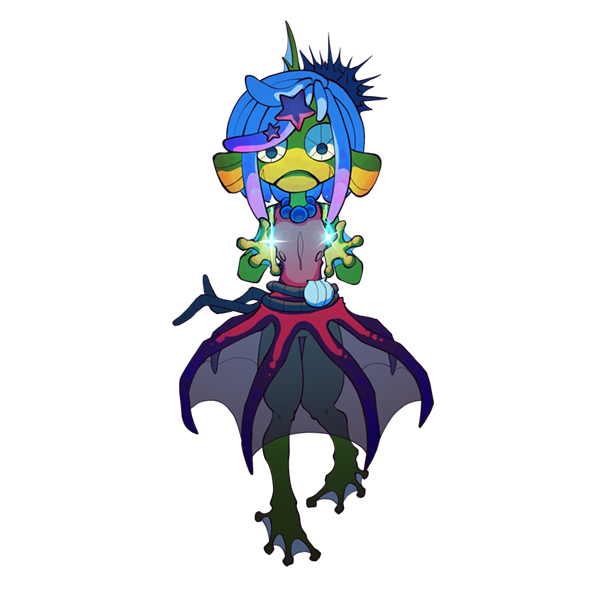
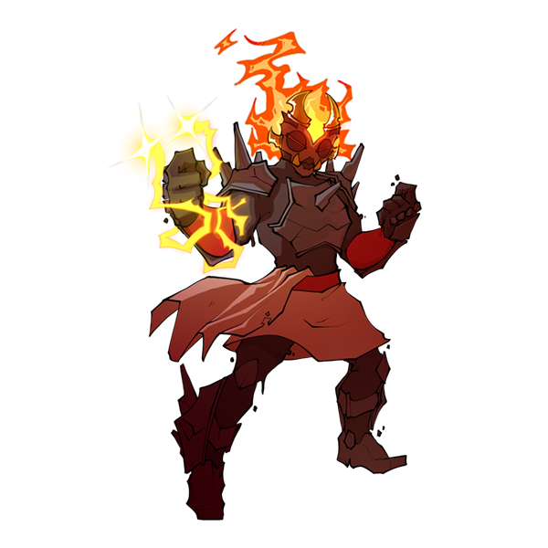
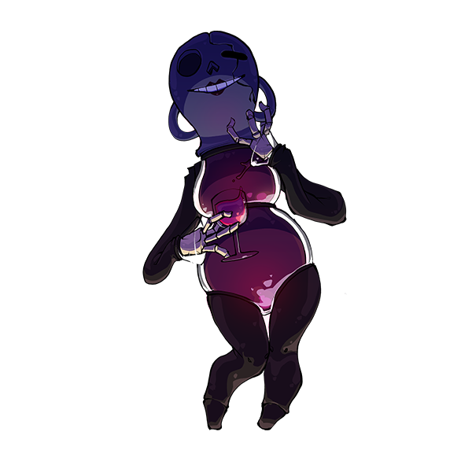
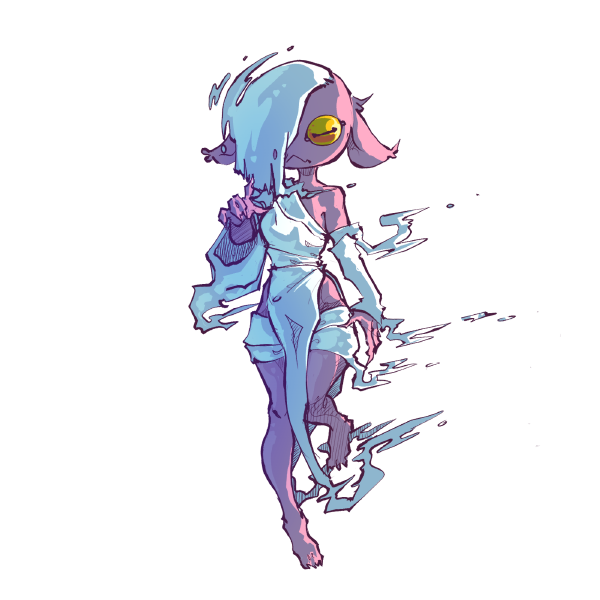

The world of Mancer is quite vast. This page has a bunch of lore and background for the game!
The name of the land Mancer takes place in is called Dissonia. It's a magical world that humans and strange creatures call home. Dissonia is made up of three main countries: The Lutum State, Pruinam, and the Turtle Isles.
Lutum is a hyper-religious, hyper-militaristic city-state that resides to the west on the side of a mountain range. Most of the world's power is centralized in Lutum. It is, after all, where the pantheon of human gods live. In Lutum, you'll find humans of all types, including sapiens, elves, and dwarves.
Lutum also is home to the highest concentration of spellcasters in Dissonia. Whenever a Lutum citizen is found to have spellcasting abilities, they are involuntarily enrolled into a state-sponsored academy where they learn how to hone their magical skills. After graduation, a spellcaster becomes a low-ranking noble and is given a government job.
Purinam is a port country toward the north of Lutum, bordering the northern wastes, a vast tundra. Purinam is loosely allied with Lutum. Purinam is a travel hub, and is known for its highly skilled mercenary companies. Lutum often scouts talent from these companies. One company of note is so renowned that people simply refer to them as "The Company.
Sapiens and snow elves call Purinam home, althogh the odd dark elf is not uncommon. Purinam, unlike Lutum, tolerates the existence of dark elves to a point. More about that in a bit.
The Turtle Isles are a small group of islands to the east. Turtlefolk, giant turtles that walk on two, call these islands home. The big isle houses a large jungle known as the Deep Wood. Within the jungle is vast amounts of natural resources. Because of this fact, Lutum is often at odds with the Isles. They have not been able to get much headway into the Isles due to a treefolk god, Old Bark, that lives on the big isle. Old Bark is one of the most powerful creatures that exists in Lutum. He could easily take on the pantheon of gods that live in Lutum.
In addition to the turtlefolk, there lives a community of dark elves in the outskirts of the Deep Wood on the big island. This community is the largest concentration of dark elves in the world, however they are not native to the Turtle Isles. Mag is from this community!
This world has many recognized types of humans. Most differences between these types of humans are mostly aesthetic. There are no significant differences in magical ability, lifespan, etc, and they can all freely interbreed and produce fertile offspring. All great apes, including humans, have an innate resistance to contract magic.
Sapien: Sapiens are the most plentiful variety of human. They are much like the humans of our world. They stand anywhere between 5 to 6 feet tall (about 1.5-1.8 meters), and typically live for about 80 years, give or take some depending on environment. Sapiens commonly have a variety of complexions based on their ancestry.
Dwarves: Dwarves are most common to Lutum, and are native to the area. They are short, between 4-5 feet tall (about 1.2-1.5 meters). Typically of dark complexion and dark hair. Their lifespan is about 90 years.
Elves are a type of human in this world. Current terminology for elves is derived from high elf society. The terms have stuck over the centuries. This is why there appears to be so many specific varieties of elves compared to other varieties of humans. All elves have long, pointed ears.
High Elf: High elves are the second most common variety of elf in Lutum. They stand at around 6-6.5 feet tall (about 1.8-2 meters), and have a shorter lifespan than sapiens, by about 5 years or so. They tend to have a fair complexion, although depending on ancestry, it is not unheard of to see high elves of other complexions. Their hair is typically brown.
Forest Elf: Forest elves are the most plentiful variety of elf in Lutum. While they no longer commonly inhabit forests, they are named as such due to originally inhabiting forests. They are not significantly taller than the average sapien, but they are much more muscular. Their lifespan is about the same as a sapien. Forest elves typically have a darker complexion, and typically have orange to red hair.
Snow Elf: Snow elves are most common in Purinam. Snow elves are on the taller end, between 6-7 feet (about 1.8-2.1 meters), with a shorter lifespan at around 72 years. They are native to Purinam and the northern wastes. They have a pale complexion and white hair.
Dark Elf: Dark elves are typically found on the Turtle Isles, although, they are not native to the area. They are native to caves in the west. However, due to many cultural things, they are reviled by other humans. Many humans call dark elves "vampires" due to myths surrounding them. Dark elves stand between 5-5.5 feet tall (about 1.5-1.6 meters) and have a lifespan of around 90 years. Dark elves have sheet-white complexions, pink to red irises, sunken eyesockets, black hair, and sharp noses. Hundreds of years ago, dark elves lived in areas with bad water. However, there was a species of cave turtle whose blood could be drank with no ill effects. This blood was a traditional foodstuff of dark elf culture, although in the current day, most dark elves refrain from consuming turtle blood out of respect for the turtlefolks' hospitality.
Goblin: Goblins are a type of monkey. Young goblins are highly violent and wily. As they mature, they mellow out and become more thoughtful and empathetic. Mature male goblins are called hobgoblins, and mature female goblins called bugbears. Mature goblins are emotionally smart, stoic, and non-violent. They are still incredibly strong and could punch a hole through the average human without really trying. Young goblins stand at about 3 feet tall (about .9 meters), hobgoblins stand at about 6 feet tall (about 1.8 meters), and bugbears at around 5 feet tall (about 1.5 meters).
Turtlefolk: Turtlefolk are native to the Turtle Isles. They are large turtles that stand upright on two legs. They also have hands not dissimilar to bird talons, just chunkier. They stand at around 5-6 feet tall (about 1.5-1.8 meters) and have a lifespan of about 100 years. Turtlefolk tend to be kind souls, but stern and blunt.
Nymphs are manifestations of mana. They spawn at the world's leylines. Great numbers of nymphs are a sign of a healthy world. There are five known types of nymphs. They all look very different from each other and have different ways of life and thinking, altough they share a commonality: Love of information. Nymphs have an innate curiosity that drives them to seek out new information. They all are also born with a mind full of information in the form of pure data that they cannot interpret. It is unknown how a nymph ages. There are nymphs in every stage of life that are anywhere between a few years old to several thousands of years old. All nymphs present female, although they have no biological sex. They are, after all, mana, rather than biological life-forms.
|  | ArboranArborans are dryads (forest nymphs). They live where growth mana is plentiful, which tends to be forests and jungles. Arborans are solitary creatures with a bleak outlook on life. They consider a human and a stone of no different value, for example. They only see the difference on the construction of things. Arborans tend not to emote, and are dispassionate about most things. |
|  | PisceranPiscerans are nereids (ocean nymphs). They live where flow mana is plentful, which tends to be the ocean. Piscerans drift in the ocean, waiting for things to come to them. They don't tend to actively seek things out. Piscerans typically don't value progress. |
|  | GaeanGaeans are oreads (mountain nymphs). They live in areas where heat mana is plentiful, which tends to be near mountain ranges or volcanoes. Gaeans live in highly organized societies. However elder gaeans are rarely seen in said societies. Gaeans are musuclar in build, and have no sense of individuality. |
|  | OponOpons are maenads (revelry nymphs). They are born in areas where dread mana is plentiful, but are often trafficked by humans for their unique ability: Liquid production. Opons have low physical strength, and no ambition. This makes them a prime target for trafficking. Opons have the ability to produce a variety of liquids inside their bodies, such as wine, beer, honey, poisons, and mayonnaise. Opons smile eternally, even if they aren't happy. |
|  | Wind MaidenWind maidens are aurae (wind nymphs). They are mysterious sky people who rarely descend to the surface. They are born among the clouds and fly around, monitoring the world. Wind maidens have dominion over the wind, which makes them quite powerful. |
There are six known gods in this world. Five are the human gods who live in Lutum. The sixth one is Old Bark, the treefolk protector of the Turtle Isles.
Synoro: Synoro is the god of exploration, discovery, messages, questing, and espionage. He puts his country first. He’s the leader of the gods, but wants to kick Ithik down a few notches because Ithik has the more important job.
Ithik: Ithik is the god of duality, knowledge, logic, reasoning, and morality. Ithik is responsible for making the difficult decisions. When there exists a problem that is morally ambiguous, he will make the decision that he thinks is best for humanity, even if the solution he determines isn't the cleanest. What he decides, Lutum must follow. If the gods do not like Ithik's decision, a congression will be held with the 5 gods and 4 of the most powerful wizards in Lutum. A majority vote overrules Ithik's decision.
Synka: Synka is the goddes of fertility, harvests, agriculture, and plants. She lives among the farmers and instructs them on the best farming practices. She also makes animals wanna boink.
Epithys: Epithys is the goddess of desire, industry, and innovation. She leads the industrial and construction sector of Lutum. She values people based on a person's ability to contribute to society.
Tipo: Tipo is the deity of the spaces inbetween, which is where the gods came from. Tipo is the most reclusive of the pantheon, and doesn't actively participate in the goings on of humanity. Tipo simply stays in the background and ensures everything runs smoothly. Tipo may very well be the most pwerful of the gods, but they hardly do anything to prove that.
Old Bark: Old Bark is the god of the Turtle Isles. He is a powerful treefolk capable of singlehandedly protecting the Isles from invaders. He values the Isles and its inhabitants more than anything, and detests Lutum.
Mana is a poorly understood substance. It's a physical thing that has a unique property of being able to turn into other materials and substances in certain quantities. Nobody really knows why that is or how it works.
Spellcasting is a rare ability amongst humans. Nobody knows why some people can spellcast and some people can't, but it is known that people can only really cast spells of a certain mana type, and often, people who can cast certain mana types of spells are found near others who can cast the same type. I.e, a person who can cast order spells will probably be found in a town where other people who can cast order spells live. Another interesting phenomena is that heavy alcoholics lose the ability to spellcast, even after they stop. It's unknown why this is the case, but many responsible spellcasters limit the amount of alcohol they consume due to this phenomena.
All this shit belongs to me, by the way. Don't use without permission!